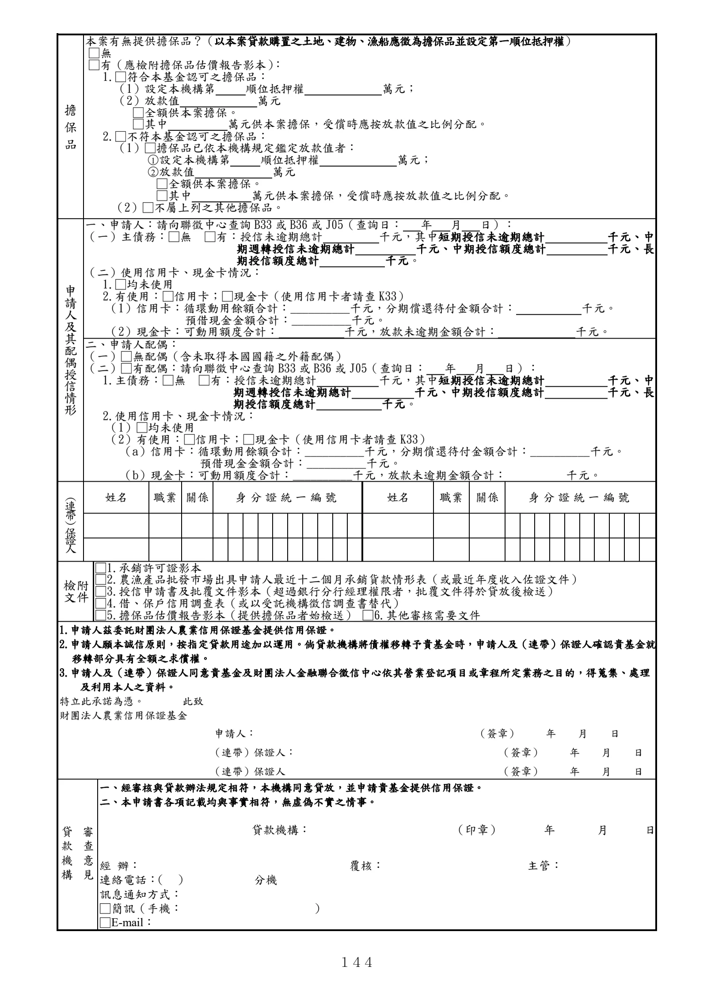

格式 30：農漁產品批發市場承銷人週轉金貸款信用保證申請書
手冊頁：144 PDF頁：156／203

查看PDF文字層
下列文字取自PDF既有文字層，僅供搜尋、複製與無障礙輔助。複雜表格的欄列位置可能失真，正式內容請以原頁預覽或PDF為準。
擔 保 品 本案有無提供擔保品？（以本案貸款購置之土地、建物、漁船應徵為擔保品並設定第一順位抵押權） □無 □有（應檢附擔保品估價報告影本） ： 1.□符合本基金認可之擔保品： （1）設定本機構第 順位抵押權 萬元； （2）放款值 萬元 □全額供本案擔保。 □其中 萬元供本案擔保，受償時應按放款值之比例分配。 2.□不符本基金認可之擔保品： （1）□擔保品已依本機構規定鑑定放款值者： ○1 設定本機構第 順位抵押權 萬元； ○2 放款值 萬元 □全額供本案擔保。 □其中 萬元供本案擔保，受償時應按放款值之比例分配。 （2）□不屬上列之其他擔保品。 申 請 人 及 其 配 偶 授 信 情 形 一、申請人：請向聯徵中心查詢 B33 或 B36 或 J05（查詢日： 年 月 日）： （一）主債務：□無 □有：授信未逾期總計 千元，其中短期授信未逾期總計 千元、中 期週轉授信未逾期總計 千元、中期授信額度總計 千元、長 期授信額度總計 千元。 （二）使用信用卡、現金卡情況： 1.□均未使用 2.有使用：□信用卡；□現金卡（使用信用卡者請查 K33） （1）信用卡：循環動用餘額合計：__________千元，分期償還待付金額合計： 千元。 預借現金金額合計：__________千元。 （2）現金卡：可動用額度合計： 千元，放款未逾期金額合計： 千元。 二、申請人配偶： （一）□無配偶（含未取得本國國籍之外籍配偶） （二）□有配偶：請向聯徵中心查詢 B33或 B36或 J05（查詢日： 年 月 日）： 1.主債務：□無 □有：授信未逾期總計 千元，其中短期授信未逾期總計 千元、中 期週轉授信未逾期總計 千元、中期授信額度總計 千元、長 期授信額度總計 千元。 2.使用信用卡、現金卡情況： （1）□均未使用 （2）有使用：□信用卡；□現金卡（使用信用卡者請查 K33） （a）信用卡：循環動用餘額合計：__________千元，分期償還待付金額合計：__________千元。 預借現金金額合計：__________千元。 （b）現金卡：可動用額度合計：__________千元，放款未逾期金額合計： 千元。 （連帶）保證人 姓名 職業 關係 身分證統一編號 姓名 職業 關係 身分證統一編號 檢附 文件 □1.承銷許可證影本 □2.農漁產品批發巿場出具申請人最近十二個月承銷貨款情形表（或最近年度收入佐證文件） □3.授信申請書及批覆文件影本（超過銀行分行經理權限者，批覆文件得於貸放後檢送） □4.借、保戶信用調查表（或以受託機構徵信調查書替代） □5.擔保品估價報告影本（提供擔保品者始檢送） □6.其他審核需要文件 1.申請人茲委託財團法人農業信用保證基金提供信用保證。 2.申請人願本誠信原則，按指定貸款用途加以運用。倘貸款機構將債權移轉予貴基金時，申請人及（連帶）保證人確認貴基金就 移轉部分具有全額之求償權。 3.申請人及（連帶）保證人同意貴基金及財團法人金融聯合徵信中心依其營業登記項目或章程所定業務之目的，得蒐集、處理 及利用本人之資料。 特立此承諾為憑。 此致 財團法人農業信用保證基金 申請人： （簽章） 年 月 日 （連帶）保證人： （簽章） 年 月 日 （連帶）保證人 （簽章） 年 月 日 審 查 意 見 貸 款 機 構 一、經審核與貸款辦法規定相符，本機構同意貸放，並申請貴基金提供信用保證。 二、本申請書各項記載均與事實相符，無虛偽不實之情事。 貸款機構： （印章） 年 月 日 經 辦： 覆核： 主管： 連絡電話： （ ） 分機 訊息通知方式： □簡訊（手機： ） □E-mail：